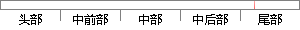

测试用例 操作描述 预期结果 实际结果 测试状态
片段位置图

相似结果
相似片段：产生测试用例的工具,该工具导入存储了TCP协议状态转换...它描述了该操作所要满足的条件以及前系统状态和操作...满足规定的需求或是弄清预期结果与实际结果之间的差别...
| 标题 | 《基于形式规格说明的协议测试研究》 |
| 对比库 | 中国学位论文全文数据库 |
| 作者 | 马发俊 |
| 机构 | 上海大学 |
| 分类 | 计算机应用技术 |
| 年份 | 2004 |
| 相似率 | 100% （严重抄袭） |
※ 片段修改建议 ※
近似词参考：- 操作：操纵
- 状态：状况
- 描述：描写 形貌
- 实际：现实
- 结果：成果 成绩 成效 后果 了局 效果
系统自动生成语句：测试用例 操纵描写 预期成果 现实成果 测试状况
注：本片段修改建议为系统自动生成，仅供参考。